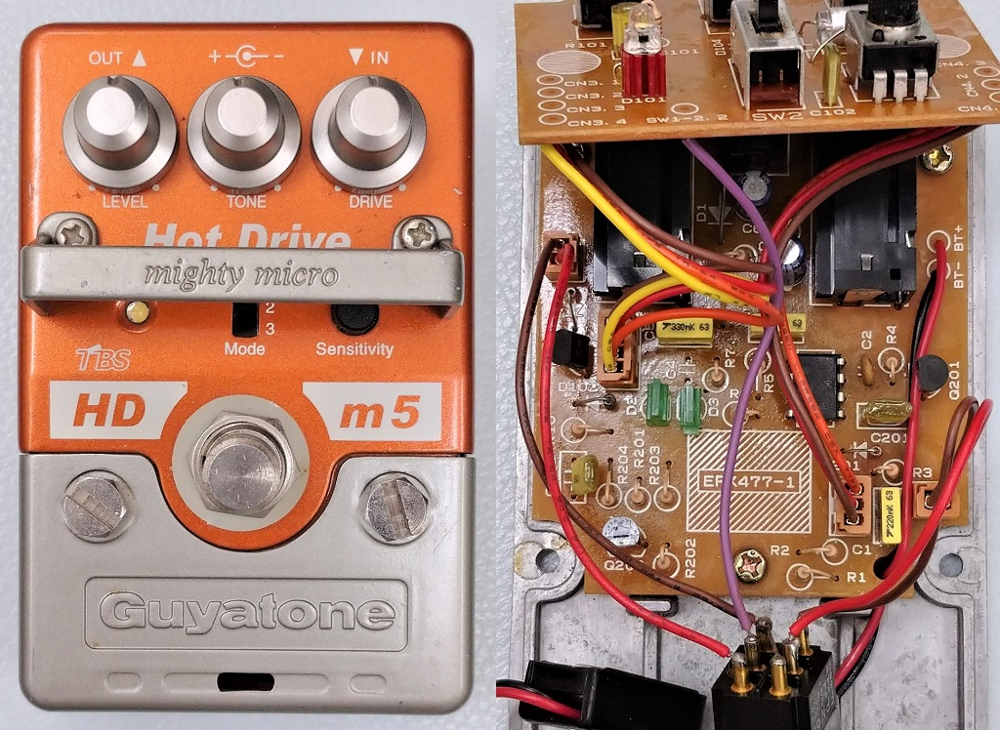
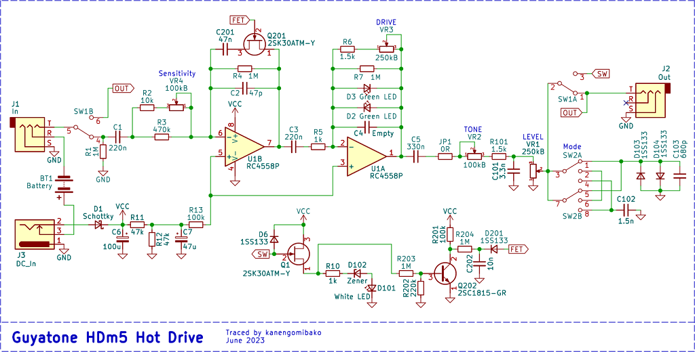
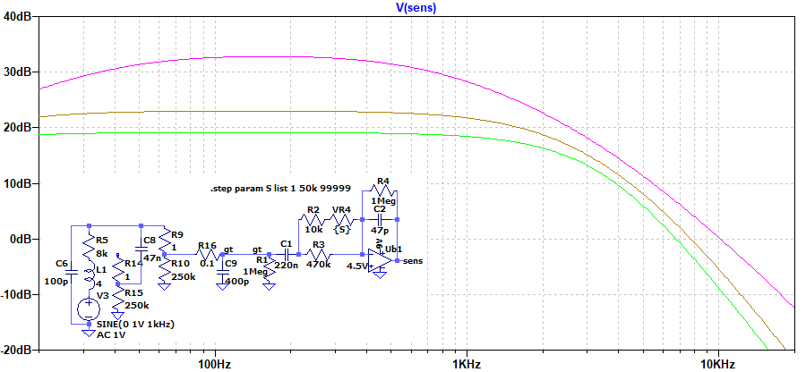
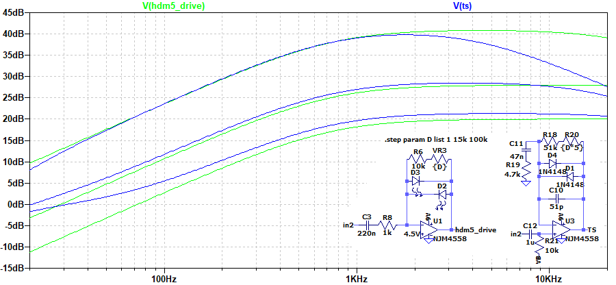
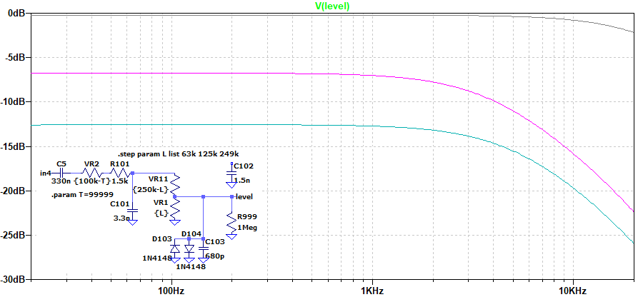

Guyatone HDm5 Hot Drive 解析
2023年08月10日 カテゴリー：修理・改造・解析

Guyatoneのmighty microシリーズはなかなか面白そうな筐体で気になっていたので、HDm5 Hot Driveを入手してみました。回路図はすでにこちらのページにあったのですが、再度確認ということで解析することにしました。KiCadとLTspiceの回路図データはGitHubにあります。
▽回路図

こちらのページに前機種HD-3の回路図が掲載されています。少し見にくいですが、Sensitivityコントロール以外はHDm5とほぼ同じです。最初にオペアンプの反転入力に入る歪み系エフェクターは、他にもOP-AMP Big MuffやBLACK CAT OD-1があります。
▽シミュレーション
- Sensitivity

ギター直結を想定しています。時計回りに回すと増幅率が大きくなり入力インピーダンスが下がるので、ファズフェイスのようにギターボリュームで音色変化させるのもよさそうです。
- DRIVE

チューブスクリーマーとの比較で、増幅率を同程度に調整しています。周波数特性としては似ていますが、緑LEDはクリップされる電圧が大きくなるので、音色は多少違ってきます。
- TONE
ポットのカーブは違いますが、ProCo RATと同じ100kΩと3.3nFのローパスフィルタです。特性の図は割愛します。
- Modeスイッチ

上図はMode 1、TONE 100%でLEVELを変化させた場合です。Mode 1やMode 3ではコンデンサが入っているため、LEVELの位置によって高音域の特性が微妙に変わってしまいます。また、Mode 1のダイオードクリップはLEVELが小さい時は働きません。LEVEL調整時は、音量だけでなく音色変化も注意した方がよいでしょう。